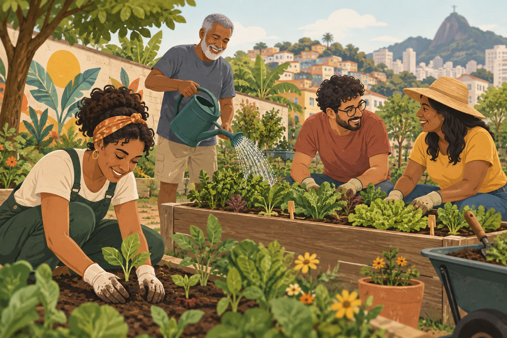

Educação, voluntariado e solidariedade começam com um encontro. Conheça as ideias que nos aproximam.

Incentivar a participação comunitária e ampliar oportunidades de aprendizagem e cooperação.
A ONG Comunidade é fictícia. Esta plataforma acadêmica demonstra como apresentar projetos, acolher voluntários e orientar contribuições.
Cada pessoa pode contribuir de um jeito. Descubra as três frentes propostas para a nossa comunidade.
Informação clara também é uma forma de cuidado.
Alimentos devem estar dentro do prazo de validade e com embalagens íntegras. Confira as orientações antes de participar.
Os projetos são ilustrativos. Não há coleta real de doações, pagamentos ou envio de cadastro nesta plataforma.
Conte como você gostaria de contribuir. Para experimentar este formulário, utilize apenas dados fictícios.
Escolha uma das páginas do menu ou retorne ao início.
Voltar ao início